<title>Daily Orders Pipeline</title>
<link rel="preconnect" href="https://fonts.googleapis.com">
<link rel="preconnect" href="https://fonts.gstatic.com" crossorigin>
<link rel="stylesheet" href="https://fonts.googleapis.com/css2?family=Archivo:wght@500;700&family=IBM+Plex+Sans:wght@400;500;600&family=IBM+Plex+Mono:wght@400;500&display=swap">
<style>
/* Layout: one wide architecture diagram, then a per-layer trace of one Business Date as a vertical sequence of record cards. */
:root {
  --bg: #f3f5f6;
  --surface: #ffffff;
  --fg: #1c2429;
  --muted: #5b6870;
  --line: #8a979f;
  --accent: #0f6e78;
  --bronze: #a2602e;
  --bronze-bg: #f6ebe1;
  --silver: #5e6d7a;
  --silver-bg: #e9eef2;
  --gold: #a07a0c;
  --gold-bg: #f8f0d6;
  --bad: #b3372e;
  --bad-bg: #f8e4e1;
  --wh-bg: #e6eef0;
  --font-display: "Archivo", "Helvetica Neue", Arial, sans-serif;
  --font-body: "IBM Plex Sans", "Segoe UI", system-ui, sans-serif;
  --font-mono: "IBM Plex Mono", ui-monospace, "Cascadia Mono", Consolas, monospace;
}
@media (prefers-color-scheme: dark) {
  :root:not([data-theme="light"]) {
    --bg: #12181b; --surface: #1a2226; --fg: #e3e9ec; --muted: #9aa8b0; --line: #6c7a82;
    --accent: #4fb8c2; --bronze: #d99561; --bronze-bg: #2e231b; --silver: #a9b7c3; --silver-bg: #222b31;
    --gold: #dcb547; --gold-bg: #2e2814; --bad: #ec7b70; --bad-bg: #331d1b; --wh-bg: #172429;
    color-scheme: dark;
  }
}
:root[data-theme="dark"] {
  --bg: #12181b; --surface: #1a2226; --fg: #e3e9ec; --muted: #9aa8b0; --line: #6c7a82;
  --accent: #4fb8c2; --bronze: #d99561; --bronze-bg: #2e231b; --silver: #a9b7c3; --silver-bg: #222b31;
  --gold: #dcb547; --gold-bg: #2e2814; --bad: #ec7b70; --bad-bg: #331d1b; --wh-bg: #172429;
  color-scheme: dark;
}
body { background: var(--bg); color: var(--fg); font-family: var(--font-body); font-size: 15px; line-height: 1.55; }
.page { max-width: 1120px; margin: 0 auto; padding-inline: 16px; padding-block: 32px 56px; display: grid; gap: 40px; }
h1, h2 { font-family: var(--font-display); text-wrap: balance; margin: 0; letter-spacing: -0.01em; }
h1 { font-size: 2rem; font-weight: 700; }
h2 { font-size: 1.3rem; font-weight: 700; }
p { margin: 0; max-width: 68ch; }
.lede { color: var(--muted); }
header { display: grid; gap: 10px; }
.eyebrow { font-family: var(--font-mono); font-size: 0.75rem; letter-spacing: 0.08em; text-transform: uppercase; color: var(--accent); }
section { display: grid; gap: 16px; }

.diagram { overflow-x: auto; background: var(--surface); border: 1px solid color-mix(in srgb, var(--line) 35%, transparent); border-radius: 10px; }
.diagram img { display: block; min-width: 940px; width: 100%; height: auto; }
svg text { font-family: var(--font-body); fill: var(--fg); }
svg .mono { font-family: var(--font-mono); font-size: 11.5px; fill: var(--muted); }
svg .title { font-family: var(--font-display); font-weight: 700; font-size: 15px; }
svg .label { font-size: 12px; fill: var(--muted); }
svg .edge { stroke: var(--line); stroke-width: 1.6; fill: none; }
svg .edge.later { stroke-dasharray: 6 5; }
svg .arrowhead { fill: var(--line); }
svg .src { fill: var(--surface); stroke: var(--line); stroke-width: 1.2; }
svg .src.later { stroke-dasharray: 6 5; }
svg .wh { fill: var(--wh-bg); stroke: var(--accent); stroke-width: 1.4; }
svg .bronze { fill: var(--bronze-bg); stroke: var(--bronze); stroke-width: 1.4; }
svg .silver { fill: var(--silver-bg); stroke: var(--silver); stroke-width: 1.4; }
svg .gold { fill: var(--gold-bg); stroke: var(--gold); stroke-width: 1.4; }
svg .bad { fill: var(--bad-bg); stroke: var(--bad); stroke-width: 1.4; }
svg .chip { fill: var(--surface); stroke: var(--accent); stroke-width: 1.2; }
svg .node { fill: var(--surface); stroke: var(--gold); stroke-width: 1.2; }
svg .tag-bronze { fill: var(--bronze); } svg .tag-silver { fill: var(--silver); } svg .tag-gold { fill: var(--gold); }
svg .tag-bad { fill: var(--bad); } svg .tag-accent { fill: var(--accent); }

.legend { display: flex; flex-wrap: wrap; gap: 8px 20px; font-size: 0.85rem; color: var(--muted); }
.legend span { display: inline-flex; align-items: center; gap: 8px; }
.swatch { width: 22px; height: 0; border-top: 2px solid var(--line); }
.swatch.later { border-top-style: dashed; }

.trace { display: grid; gap: 14px; }
.step { display: grid; grid-template-columns: 150px minmax(0, 1fr); gap: 16px; align-items: start; padding: 16px; background: var(--surface); border-radius: 10px; border-left: 4px solid var(--line); }
.step.bronze { border-left-color: var(--bronze); }
.step.silver { border-left-color: var(--silver); }
.step.gold { border-left-color: var(--gold); }
.step.source { border-left-color: var(--accent); }
.where { display: grid; gap: 4px; }
.where b { font-family: var(--font-display); font-size: 1rem; }
.where small { color: var(--muted); font-family: var(--font-mono); font-size: 0.75rem; }
.body { display: grid; gap: 10px; min-width: 0; }
.scroll { overflow-x: auto; }
table { border-collapse: collapse; font-family: var(--font-mono); font-size: 0.8rem; font-variant-numeric: tabular-nums; white-space: nowrap; }
th, td { text-align: left; padding: 5px 14px 5px 0; border-bottom: 1px solid color-mix(in srgb, var(--line) 30%, transparent); }
th { color: var(--muted); font-weight: 500; }
td.num { text-align: right; }
tr.rejected td { color: var(--bad); }
tr.excluded td { color: var(--muted); text-decoration: line-through; }
.note { font-size: 0.85rem; color: var(--muted); }
code { font-family: var(--font-mono); font-size: 0.85em; }

@media (max-width: 640px) {
  .step { grid-template-columns: minmax(0, 1fr); gap: 10px; }
  h1 { font-size: 1.6rem; }
}
</style>

<main class="page">
  <header>
    <div class="eyebrow">retail-data-pipeline · slice 1 · ELT</div>
    <h1>Daily Orders Pipeline</h1>
    <p class="lede">How one Business Date moves from the Olist shop into a ClickHouse star schema. Postgres and Excel are the sources. Python extracts and loads them unchanged into Bronze, and dbt transforms Bronze into Silver and Gold inside the warehouse. Airflow runs the four daily steps in order, at midnight Indonesia Western Time (WIB). Kafka is designed in but arrives in a later slice.</p>
  </header>

  <section aria-labelledby="arch">
    <h2 id="arch">Pipeline, step by step</h2>
    <div class="diagram">
      
    </div>
    <div class="legend">
      <span>Steps 3 to 6 run once per Business Date. Rerunning a date drops its partitions and rebuilds them, so a rerun changes nothing.</span>
      <span>Kafka (Orders and Reviews topics into Bronze) arrives in a later slice.</span>
    </div>
  </section>

  <section aria-labelledby="trace">
    <h2 id="trace">One Business Date, layer by layer</h2>
    <p class="note">Example data: the test fixture's orders for Business Date <code>2017-11-24</code>, the Friday of Black Friday week. Order Item <code>o1/1</code> is followed through every layer, alongside a few rows that take a different path.</p>

    <div class="trace">
      <article class="step source">
        <div class="where"><b>Shop Database</b><small>Postgres · typed</small></div>
        <div class="body">
          <div class="scroll"><table>
            <tr><th>order_id</th><th>status</th><th>purchased</th><th>item</th><th>product</th><th class="num">price</th><th class="num">freight</th></tr>
            <tr><td>o1</td><td>delivered</td><td>2017-11-24 10:00:00</td><td>1</td><td>p1</td><td class="num">100.00</td><td class="num">10.00</td></tr>
            <tr><td>o1</td><td>delivered</td><td>2017-11-24 10:00:00</td><td>2</td><td>p2</td><td class="num">50.00</td><td class="num">5.00</td></tr>
            <tr><td>o2</td><td>canceled</td><td>2017-11-24 11:00:00</td><td>1</td><td>p1</td><td class="num">30.00</td><td class="num">3.00</td></tr>
            <tr><td>o3</td><td>delivered</td><td>2017-11-24 23:59:59</td><td>1</td><td>p3</td><td class="num">20.00</td><td class="num">2.00</td></tr>
          </table></div>
          <p class="note">The extract selects Orders whose purchase date is the Business Date. <code>o4</code>, bought at 2017-11-25 00:00:00, waits for the next day's run.</p>
        </div>
      </article>

      <article class="step bronze">
        <div class="where"><b>Bronze</b><small>step: bronze</small></div>
        <div class="body">
          <div class="scroll"><table>
            <tr><th>order_id</th><th>order_item_id</th><th>product_id</th><th>price</th><th>_business_date</th><th>_loaded_at</th></tr>
            <tr><td>'o1'</td><td>'1'</td><td>'p1'</td><td>'100.00'</td><td>2017-11-24</td><td>2026-10-08 09:15:02.417</td></tr>
            <tr><td>'o1'</td><td>'2'</td><td>'p2'</td><td>'50.00'</td><td>2017-11-24</td><td>2026-10-08 09:15:02.417</td></tr>
            <tr><td>'o3'</td><td>'2'</td><td>'p1'</td><td>'-5.00'</td><td>2017-11-24</td><td>2026-10-08 09:15:02.417</td></tr>
          </table></div>
          <p class="note">An exact copy with every value stored as text. The third row is a deliberately bad record, like the ones the tests inject. Bronze accepts it as it arrived.</p>
        </div>
      </article>

      <article class="step silver">
        <div class="where"><b>Silver</b><small>step: silver · dbt</small></div>
        <div class="body">
          <div class="scroll"><table>
            <tr><th>business_date</th><th>order_id</th><th>order_item_id</th><th>product_id</th><th class="num">price</th><th class="num">freight</th></tr>
            <tr><td>2017-11-24</td><td>o1</td><td class="num">1</td><td>p1</td><td class="num">100.00</td><td class="num">10.00</td></tr>
            <tr><td>2017-11-24</td><td>o1</td><td class="num">2</td><td>p2</td><td class="num">50.00</td><td class="num">5.00</td></tr>
          </table></div>
          <div class="scroll"><table>
            <tr><th>quarantine · entity</th><th>record_key</th><th>failure_reason</th></tr>
            <tr class="rejected"><td>order_item</td><td>o3/2</td><td>negative price</td></tr>
          </table></div>
          <p class="note">Values are cast (Int32, Decimal(18,2)), duplicates are removed, and every row is checked against its parent Order and the catalog. The bad row goes to Quarantine with its reason, and the run continues.</p>
        </div>
      </article>

      <article class="step gold">
        <div class="where"><b>Gold fact</b><small>step: facts</small></div>
        <div class="body">
          <div class="scroll"><table>
            <tr><th>order_id</th><th>item</th><th>product_id</th><th>order_status</th><th class="num">price</th><th>counts_as_revenue</th></tr>
            <tr><td>o1</td><td>1</td><td>p1</td><td>delivered</td><td class="num">100.00</td><td>1</td></tr>
            <tr><td>o1</td><td>2</td><td>p2</td><td>delivered</td><td class="num">50.00</td><td>1</td></tr>
            <tr class="excluded"><td>o2</td><td>1</td><td>p1</td><td>canceled</td><td class="num">30.00</td><td>0</td></tr>
            <tr><td>o3</td><td>1</td><td>p3</td><td>delivered</td><td class="num">20.00</td><td>1</td></tr>
          </table></div>
          <p class="note"><code>fact_order_items</code> keeps every Order Item and flags whether it counts as Revenue. Canceled and unavailable Orders are kept but flagged <code>0</code>.</p>
        </div>
      </article>

      <article class="step gold">
        <div class="where"><b>Gold dimensions</b><small>step: dimensions</small></div>
        <div class="body">
          <div class="scroll"><table>
            <tr><th>dim_product · product_id</th><th>product_category_name</th><th>product_category</th></tr>
            <tr><td>p1</td><td>brinquedos</td><td>toys</td></tr>
            <tr><td>p2</td><td>NULL</td><td>Uncategorized</td></tr>
            <tr><td>p3</td><td>pc_gamer</td><td>pc_gamer</td></tr>
          </table></div>
          <p class="note">The category is resolved inside the product dimension: the English name, else the original name, else <code>Uncategorized</code>. That keeps it a star, not a snowflake.</p>
        </div>
      </article>

      <article class="step gold">
        <div class="where"><b>Report view</b><small>daily_revenue_by_category</small></div>
        <div class="body">
          <div class="scroll"><table>
            <tr><th>business_date</th><th>product_category</th><th class="num">revenue</th><th class="num">orders</th><th class="num">items</th></tr>
            <tr><td>2017-11-24</td><td>toys</td><td class="num">100.00</td><td class="num">1</td><td class="num">1</td></tr>
            <tr><td>2017-11-24</td><td>Uncategorized</td><td class="num">50.00</td><td class="num">1</td><td class="num">1</td></tr>
            <tr><td>2017-11-24</td><td>pc_gamer</td><td class="num">20.00</td><td class="num">1</td><td class="num">1</td></tr>
          </table></div>
          <p class="note">Revenue = Order Item price, excluding Freight, for Orders not canceled or unavailable. Total 170.00 for the day. Reconcile checks this total against the Shop Database.</p>
        </div>
      </article>
    </div>
  </section>
</main>
